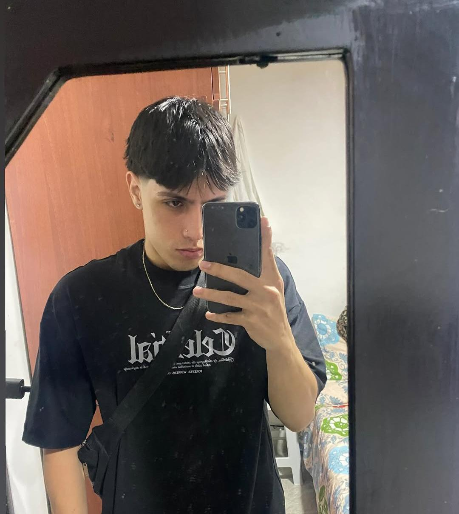
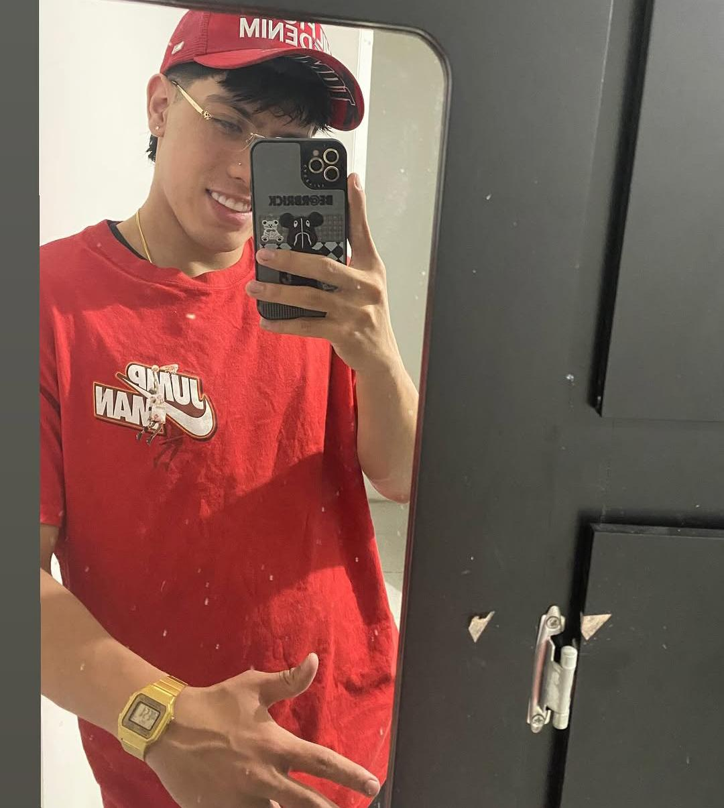
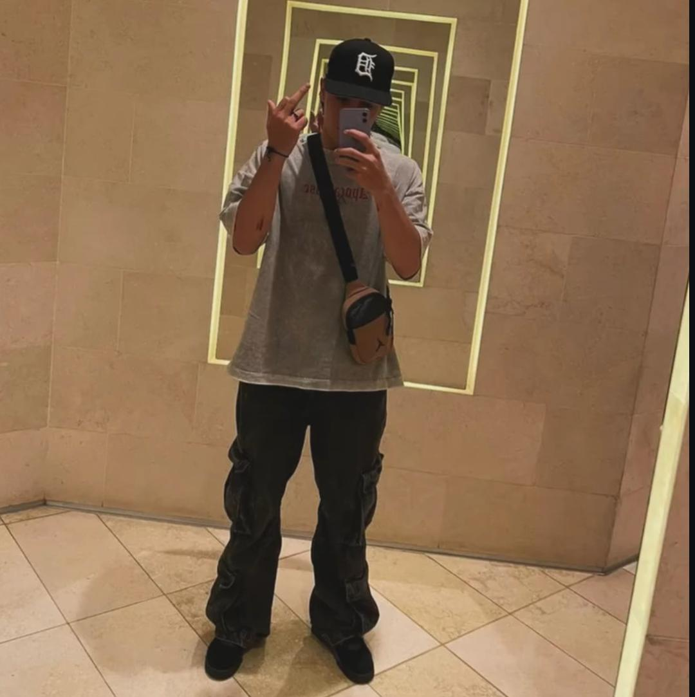
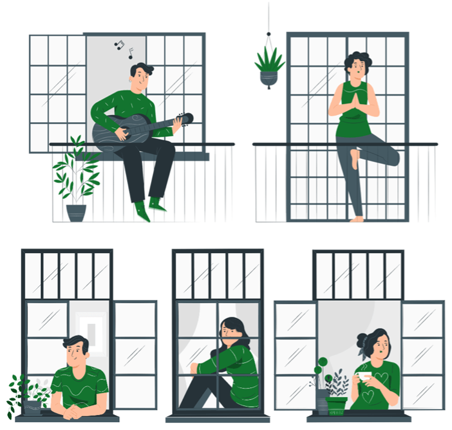
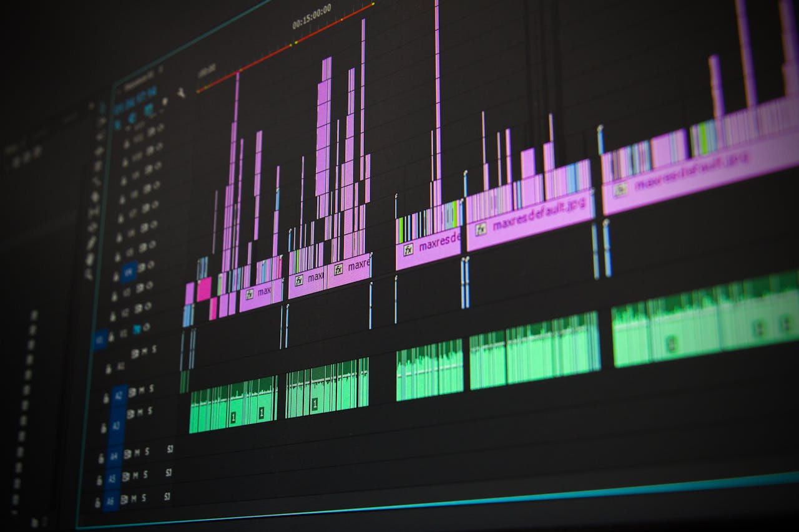
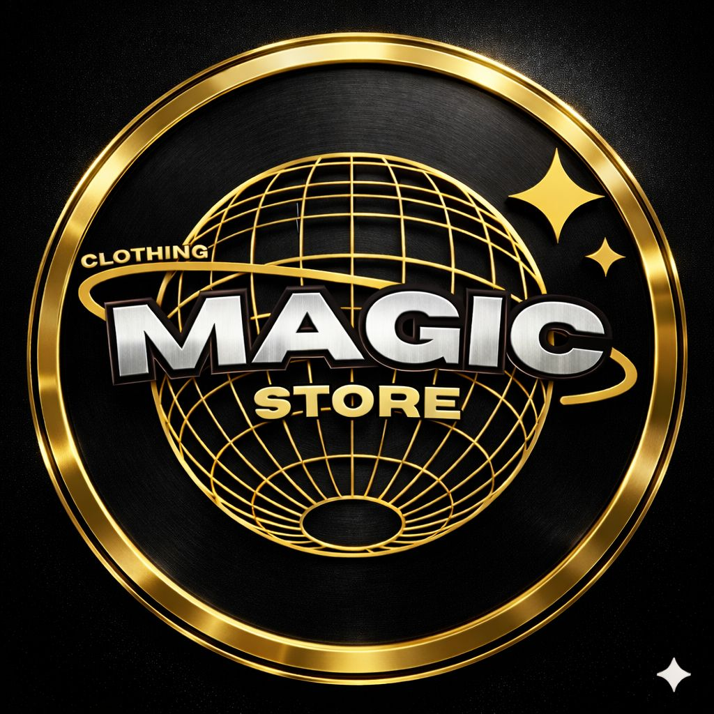
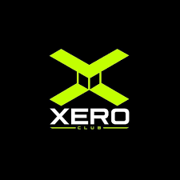
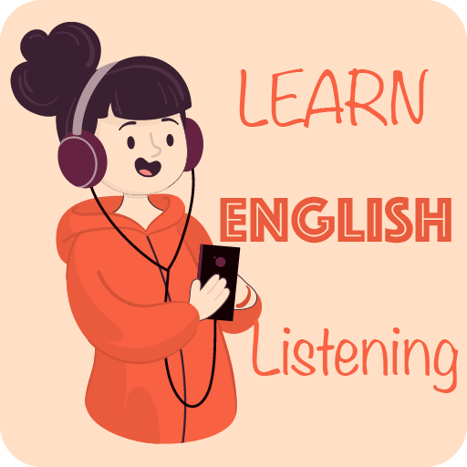
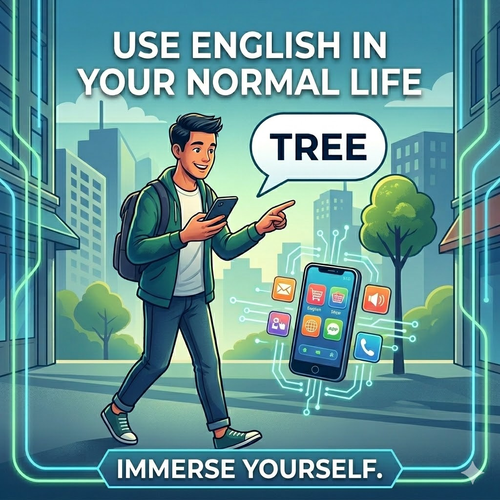
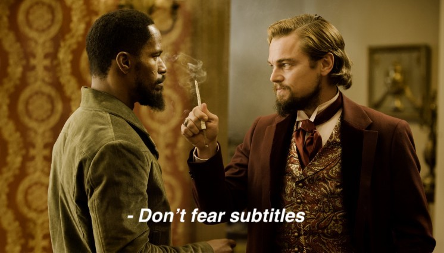

ABOUT ME
Hello! I am Juan David Franco Alzate. I am 24 years old and I live in Medellín, Colombia. I am an Engineering student and I am currently working on my 'Route to B1' English program. This is my blog for my A2+ class.
Software Engineering Student & A2+ Project
Hello! I am Juan David Franco Alzate. I am 24 years old and I live in Medellín, Colombia. I am an Engineering student and I am currently working on my 'Route to B1' English program. This is my blog for my A2+ class.



Currently, I am a dedicated software engineering student. Although I have already finished all my subjects, I do not have my professional degree yet because I am still working hard to complete my B1 English requirement to graduate. Right now, I am developing a robust website for a clothing store called "Magic Store". I do not use simple tools for this project; instead, I use Java and Spring Boot for the backend, while I manage the data with MySQL. At this moment, I am focusing on building the frontend using Angular. I do not want to rush the process because I plan to finish a high-quality system for my professional portfolio. To improve my English skills, I try to learn the lyrics of my favorite songs. Furthermore, I enjoy watching movies in English with subtitles to understand the pronunciation better, as I do not like watching them dubbed anymore. I believe that practicing every day is the best way to reach my goals. In my free time, I love mixing hardtechno music at home. I do not play soft techno or commercial music because I only enjoy the heaviest beats.I own a controller and powerful speakers to practice my sets Although I really like going to festivals, I do not go out much lately because I prefer to stay focused on my graduation. When I am at home, I also spend a lot of time with my three cats; I do not feel lonely while I am coding because they always keep me company. I want to finish my English route soon because I am excited to start my professional career as a graduate.
 Software Development
Software Development
 HARDTECHNO Mix
HARDTECHNO Mix
 B1 Requirement
B1 Requirement
I have lived many great adventures on my motorcycle, and I have visited several beautiful places in Colombia. However, my favorite trip happened in March of this year. I traveled with my girlfriend, and we explored many small towns along the way. I did not travel by bus because I have never felt as free as when I am riding on the open road. The journey was exciting. At first, we stayed for a few days in Sincelejo with my girlfriend's family. I did not know that city before this trip, so I met new people and experienced a different culture. Before leaving, I tried new food with exotic flavors, like "mote de queso", which I had never tasted before. It was delicious! After that, we rode to Tolú and then to Coveñas. Where we stayed in a very comfortable hotel. While we were riding near the coast, the sun was shining and the landscapes were amazing. From Coveñas, we took a boat to visit the San Bernardo Archipelago. We stayed at Isla Palma, and there I tried lobster for the first time. We did not miss the chance to go to Santa Cruz del Islote, the most densely populated island in the world. The experience was incredible because I held a small shark with my hands while I was swimming in a protected area. I was not afraid during that moment. Finally, the trip back to Medellin was exhausting and we did not arrive early, but it was worth it. These experiences have taught me to be more independent and to appreciate the beauty of my country even more.

I have experienced many significant changes in my life since I started university in 2020. People often ask me how long I have been a student, and I always answer that it has been a long and challenging journey, hasn't it?. The biggest achievement I have had is moving out and becoming independent here in Medellin. It has been hard to be away from my father and my sister, but I have learned a lot by living on my own. Being independent requires a lot of maturity, doesn't it? I have worked and studied at the same time for several years now. This situation has been difficult, and I have not had much free time lately, but I believe that you can achieve anything if you fight for what you want. Nothing in life is easy, is it? My main goal is to work for a foreign company and earn a salary in dollars. That would improve my lifestyle significantly, wouldn't it? Regarding my passion for music, I have practiced mixing hardtechno since I bought my equipment. Recently, I have also started learning how to produce my own tracks. Producing is much more complex than mixing, isn't it? I have studied music production for a few months, and although I have never released a song before, I will finish my first track very soon. I do not think I have ever felt more motivated than now. I have made great progress this year, haven't I?

independent Life
Music productionI have many exciting plans for the coming months and the years ahead. First, regarding my short-term goals, I am finishing my B1 English route on June 30th, and my graduation ceremony is taking place in September. Professionally, I am going to focus on my career as a developer, but I also have big musical plans. For example, I am playing at a club called Xero Club next month! In addition, I am going to move to a new house soon. I currently have a roomie, but I want to live completely alone; therefore, I am not going to share my space with anyone else anymore. I wonder if I will find the perfect place quickly. Looking ahead, I will work for a foreign company to earn a high salary and improve my lifestyle. I will not stay in a job that doesn't allow me to grow. Moreover, my friend and I are going to grow our urban clothing store. Currently, we are not selling our own designs because we import clothes from the United States. However, in the future, we are going to create our own original brand. I often wonder whether our future brand will become a trend. Consequently, I will dedicate a lot of energy to this project, and I will not waste my time. In the long run, I see myself as a successful entrepreneur. I am going to have my own house and a beautiful family. Eventually, I hope my current projects will be large and stable companies. I will not have a traditional job because I am going to live off my own businesses and investments. It is a big challenge, but I will not give up and I will fight for my dreams. I would like to know if I will achieve everything I have planned for my life.

MAGIC STORE
XERO CLUBLearning a new language is difficult, but it is also very good for your future. I want to share many simple tips for all students who want to improve. If you want to learn, you must practice every day because you need to be constant to see real results. First of all, you should relax. You can learn faster if you use English in your normal life. For example, when you go to the shop, you should try to name the food in English. Furthermore, you could watch movies or videos with subtitles. After you finish a video, you had better write a short text about it to practice your writing. Another good idea is to change the language of your phone to English. You might feel a bit lost at first, but this will help you learn new words easily. In addition, you should try to think in English. You should not translate every word in your head because that is very slow. Instead, you could talk to yourself about your day while you are cooking or walking. Regarding the social part, you should look for friends to practice. You can find many people online or in clubs, so you don't have to study alone. Also, you could listen to podcasts or music while you are working. You might not understand everything at the beginning, but your ears will get used to the sounds. Moreover, you should use sticky notes around your house. You can write the names of objects like "mirror", "fridge", or "door" and put them in the correct place. This way, you will see the words every day. You should also try to read small news or blogs about topics you like, for example, technology or music. You don't have to read a whole book, just a few sentences every morning. On the other hand, there are things you must not do. You should not be afraid of making mistakes because everyone makes them when they learn. Also, you mustn't give up when you feel tired after work or university. You don't have to spend a lot of money on expensive books because there are many free apps on the internet. Finally, you should not compare your progress with other people. In conclusion, it might be hard at the start, but if you work hard and stay positive, you will reach your goals.

Listen music in english

Watch movies in english